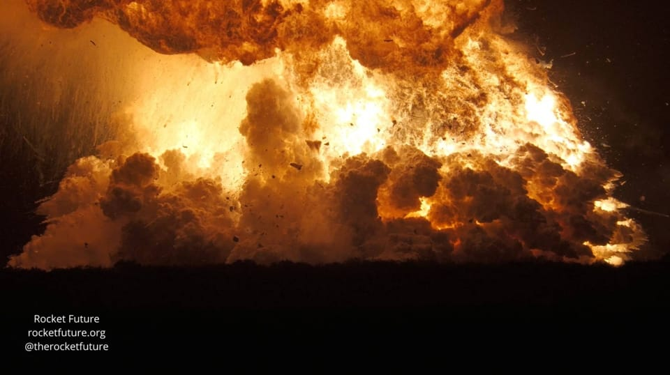

世界苦茶06月20日新闻 | 34条 | 以色列在袭伊朗核反应设施

以色列在袭伊朗核反应设施 | 星舰试验时发生大爆炸 | 台湾开始大规模在公务员检查共谍 | 泰国执政联盟破裂
每天三件事：
苦茶数据
美元兑人民币：7.18（昨日7.19，前日7.18）
美元兑日元：145.24（昨日145.29，前日145.07）
上证指数：3364（昨日3362，前日3380）
标普500指数：5980（昨日5980，前日5982）
比特币：104672（昨日104841，前日105063）
布伦特原油：76.97（昨日77.38，前日76.76）
以伊战争
• 内坦亚胡称能摧毁伊核 ：以色列总理内坦亚胡说，以色列有能力摧毁伊朗所有核设施，包括位于山区的福尔道地下核设施。新华社报道，内坦亚胡星期四接受以色列公共广播电台采访时说，以军已摧毁伊朗一半以上的导弹发射器。无论美国总统特朗普是否决定加入对伊朗的空袭，以色列都有能力清除所有打击目标，包括伊朗所有核设施。美国白宫新闻秘书莱维特当天早些时候说，特朗普将在“两周内”决定是否下令美军对伊朗发动打击。
• 以防长称哈梅内伊须下台 ：以色列国防部长卡茨再次就以色列医院遭伊朗袭击一事，谴责伊朗最高领袖哈梅内伊，称“他不能再被容许存在”。法新社报道，以色列国防部长卡茨星期四在特拉维夫附近城市霍隆告诉记者：“哈梅内伊公开宣称他想要摧毁以色列——他亲自下令向以色列医院开火。他认为摧毁以色列国，就是他的目标。这样的人不能再被允许存在。”以色列称，南部贝尔谢巴的索罗卡医院，当天早些时候遭伊朗空袭击中。卡茨随后表明，伊朗对以色列医院的袭击是“极其严重的战争罪行”，哈梅内伊会为其行为负责。
• 以色列袭击阿拉克核设施 ：以色列军方声称袭击伊朗西北部阿拉克一座已停止运行的核反应堆，伊朗位于纳坦兹的核设施也再次成为袭击目标。法新社报道，以色列国防军星期四发布声明说，以军在夜间突袭中，袭击了阿拉克地区的核反应堆，该设施的核心密封结构也遭到袭击，这是钚生产的关键部件。阿拉克距离伊朗首都德黑兰260公里。位于洪达卜村郊区的阿拉克重水研究反应堆始建于21世纪初，但根据伊朗2015年与主要大国达成的核协议条款，该反应堆的建设被迫停止。
• 中方撤离在伊以公民 ：中国外交部披露，逾1600名中国公民从伊朗撤离，另有数百人从以色列撤离。中国外交部发言人郭嘉昆星期四在例行记者会上说，截至目前，在外交部和中国驻伊朗、以色列及周边有关国家使领馆组织协调下，已有1600余名中国公民从伊朗安全撤离，数百名中国公民从以色列撤离。他说，外交部及有关使领馆将继续全力以赴协助中国公民安全转移撤离。
• 美伊密集通话寻外交解 ：美国中东问题特使威特科夫和伊朗外长阿巴斯·阿拉格奇已多次通话，以期通过外交方式结束危机。阿拉格奇称，除非以色列停止袭击，否则伊朗不会重返谈判。以色列卫生部称，伊朗对索罗卡大学医学中心的袭击已造成至少240人受伤，其中4人重伤。以色列军官称，伊朗使用了一枚带有多枚弹头的导弹。以色列军官称，空袭已摧毁了伊朗约三分之二的导弹发射装置，估计仍有百余个正在运行的发射装置。以色列国防部长卡茨称，军方已得到指示，为了实现所有目标，伊朗最高领袖哈梅内伊绝对不应该继续存在。以色列外长萨尔表示，以色列“暂时没有”将伊朗政权更迭作为目标。
• IAEA无法核查伊高浓缩铀 ：联合国核监督机构指出，以色列持续的军事行动阻碍了核查人员开展工作，目前无法核实伊朗近乎武器级浓缩铀库存的具体位置。伊朗的409公斤高浓缩铀 —— 足以制造10枚核弹头 —— 理论上应在伊斯法罕的一处地下设施内，由国际原子能机构加封保管。但IAEA总干事格罗西星期三说，目前该库存的具体位置不明，因德黑兰方面曾警告称，若以色列发动袭击，该库存可能转移。格罗西在接受彭博电视采访时谈及该铀库存时称：“我不是很确定，在战争时期，所有核设施均处于关闭状态。无法进行核查，也无法开展正常活动。”
中国新闻
• 中国发布医美项目规范 ：中国印发立项指南，统一规范美容整形项目。由中国国家医疗保障局印发的《美容整形类医疗服务价格项目立项指南（试行）》，星期三在国家医保局官网发布。国家医保局在编制说明部分介绍，该局设立101项美容整形项目，下一步将指导各省医保局参考《美容整形类医疗服务价格项目立项指南（试行）》，指导有条件的医疗机构按照公平合理、诚实信用、质价均等的原则自主合理制定价格，并及时向社会公开公示。
• 中方促美落实留学承诺 ：美国国务院宣布将恢复学生签证面试后，中国外交部说，一贯反对将教育合作政治化，希望美国将总统特朗普欢迎中国留学生赴美学习的表态落到实处。中国外交部发言人郭嘉昆星期四主持例行记者会。有记者提问，美国国务院宣布将恢复学生签证面试，中国如何看待这一政策？郭嘉昆回应，中美教育合作是互利的，中国一贯反对将教育合作政治化，希望美国将特朗普欢迎中国留学生赴美学习的表态落到实处，切实保障在美中国留学生和学者的正当合法权益。
• 江西民营救护车被整顿 ：中国江西省一辆民营救护车转运收费过高引发舆情，涉事医院被暂停医疗转运服务。江西省卫生健康委员会星期三发布情况通报，回应有患者家属质疑南昌赣医医院救护车转运收费问题，称涉事医院被暂停医疗转运服务，不合理费用已退回。通报称，下一步，卫健委将对事件进一步调查核查，并对转运救护车规范使用加强监管。
亚太印太新闻
• 泰国召见柬使抗议通话泄密 ：泰国当局召见柬埔寨大使并发出外交照会，对导致泰国政治危机的泰柬高层通话录音泄露事件表示失望。法新社报道，泰国首相佩通坦与柬埔寨前首相洪森的通话内容遭泄露一事，在国内掀起政治风暴。泰国第二大党自豪党以此事对国家造成影响为由，退出佩通坦所在为泰党领导的执政联盟，佩通坦本人也被呼吁下台。泰国外交部发言人尼功德星期四告诉媒体，泰国当局已于当天上午就这次事件召见柬埔寨大使，并递交一份外交照会。 （翻评：突然为泰党的执政就遭遇困境了。）
• 翁山淑枝狱中过80岁 ：缅甸前民主领袖翁山淑枝，在军政府拘禁中度过80岁生日。法新社报道，翁山淑枝星期四在拘禁中迎来80岁生日。她在军方2021年政变中被推翻，被指控贪腐、违反冠病疫情防疫规定等多项罪名，并被判监禁27年。翁山淑枝的儿子金·阿里斯身在英国，他表明，为母亲庆生很难，“我们已经学会忍耐，毕竟事情已经持续了这么久”。
• 朝鲜发射十余枚火箭炮 ：韩国军方说，朝鲜向朝鲜半岛西部海域发射10多枚火箭炮。韩联社报道，韩国军方人士星期四说，朝鲜当天上午10时左右，在平壤顺安一带，向西北方向发射10雨枚火箭炮，韩美情报部门正在对火箭炮的具体参数进行精密分析。报道称，这些火箭炮向朝鲜半岛西部海域飞行数十公里。韩军方推测，朝鲜可能动员240毫米口径火箭炮进行射击训练。该型号火箭炮的打击范围，覆盖韩军前线部队基地和首都圈地区。
• 英舰穿越台海捍卫航行权 ：一艘英国海军巡逻舰星期三穿越台湾海峡，台湾外交部说，此举捍卫台海的航行自由，并展现台海为国际水域的坚定立场。综合《自由时报》和法新社报道，台湾外交部星期四透露，英国皇家海军巡逻舰史佩号星期三通过台海，台方欢迎并肯定英方再次以具体行动捍卫台海的航行自由，并展现台海为国际水域的坚定立场。台湾外交部还说，鼓励英国等理念相近国家共同捍卫台海和平与稳定，促进自由及开放的印太地区，并维系以规则为基础的国际秩序。
• 台调查2336名公务员 ：台湾官方公布，已函请各部会启动特殊查核，特查对象为2336名公务员。综合台湾《联合报》和雅虎新闻报道，《涉及国家安全或重大利益公务人员特殊查核办法》修正案已在本月6日生效，行政院五长，即行政院长卓荣泰、副院长郑丽君、秘书长龚明鑫，以及两位副秘书长王贵莲与李国兴，已列为首波优先实施对象，以展现执法决心。除此之外，台湾政院人士也称，行政院星期一也已函请各部会启动特查，将须特查人员送法务部调查局办理。
• 台加强反间谍特别查核 ：在大陆间谍案数量日益上升的背景下，台湾行政院已要求各部会启动特别查核机制，以防范大陆持续渗透，并规定将被列为特查对象的人员移送调查局进一步调查。综合台湾《自由时报》《上报》报道，台湾行政院与考试院6月4日联合公告修正《涉及国家安全或重大利益公务人员特殊查核办法》，并于6月6日正式生效。此次修法加强了查核机制，包括增加查核频次与项目内容。台湾行政院已宣布，政院正、副院长、秘书长及两位副秘书长办公室的全体人员将作为首波查核对象。
科技新闻
• 儿童科技成瘾与自杀关联 ：美国一项研究显示，10岁时的屏幕使用时间与四年后青少年自杀行为的发生率并无直接关联，而是与他们是否对科技产品上瘾有关。《纽约时报》报道，这项针对4000多名儿童的研究结果星期三刊登在《美国医学会杂志》。研究发现，尤其是在使用手机方面，几乎一半的孩子表现出高度的成瘾行为。研究显示，许多孩子即使屏幕时间不长，也会表现出强烈的成瘾倾向，如很难放下设备，或觉得须不断使用设备。到14岁时，成瘾行为严重或日益严重的孩子产生自杀或自残想法的可能性是其他孩子的两到三倍。
• SpaceX星舰测试爆炸 ：美国太空探索技术公司的新一代重型运载火箭“星舰”，在例行静态点火测试时发生严重爆炸，目前无人员伤亡报告。法新社报道，美国得克萨斯州卡梅伦县当局在脸书发文说，亿万富豪马斯克旗下的太空探索技术公司重型运载火箭“星舰”，于当地时间星期三晚间在得州进行例行静态点火测试，其间发生“灾难性的故障并爆炸”。据报道，“星舰”36号飞船当天在得州博卡奇卡的基地进行测试。SpaceX公司表明，“星舰”36号在发射基地测试台准备进行第10次飞行测试时，发生重大异常。
• 欧盟调查xAI收购X交易 ：马斯克旗下xAI以330亿美元收购社交媒体平台 X 的交易引发了欧盟的新一轮审查。监管机构正根据《数字服务法》评估是否对其处以罚款。据知情人士透露，欧盟委员会近期向X发出了新的问询函，调查X在被 xAI 收购后的企业架构的变化情况。新的调查反映出欧盟监管机构的担忧，可能会影响对 X 潜在罚款的额度。根据《数字服务法》，罚款金额与公司的全球营收挂钩，这意味着合并后公司的规模和架构可能会影响未来的潜在罚款额度。欧盟委员会可能会在八月夏季休会前，宣布根据《数字服务法》对 X 涉嫌违规行为作出首笔罚款。X 还可以承诺解决欧盟方面的关切，从而避免被处罚。
• X平台将上线投资功能 ：社交媒体平台 X的首席执行官琳达·亚卡里诺表示，用户 “很快” 将能在 X 上进行投资和交易。亚卡里诺告诉媒体，“你将可以在X上管理你的整个财务生活，我可以在平台上给你转昨晚分摊的披萨钱，也可以做一笔投资或交易 —— 未来就是这样。”她补充称，X公司还在探索推出自己的信用卡或借记卡，最早可能在年内问世。年内早些时候，X 宣布将推出 X Money。亚卡里诺表示，X Money 将首先在美国推出，随后推广至其他地区，该服务将支持用户购买商品、储存余额或向内容创作者打赏，“一个目前不存在的商业生态系统和金融生态系统将会在X上诞生。”
• Telegram创始人遗产计划 ：身价139亿美元的 Telegram 创始人兼CEO帕维尔·杜罗夫计划将其巨额财富留给他所生的 100 多个孩子。杜罗夫表示，他是三位不同伴侣育有的六个孩子的正式父亲。他还在15年前开始捐献精子，并表示通过这种方式孕育了100多个婴儿。杜罗夫说，“我想明确指出，我对我的孩子一视同仁：有些是自然受孕的，有些是通过我的捐精而生的，他们都是我的孩子，都将享有同等的权利。”杜罗夫还表示，“我最近才立下遗嘱。我决定，从今天开始，我的子女在30年内不得继承我的财产。”
• 微软准备退出与OpenAI的关键性谈判： 微软公司已准备好退出与OpenAI关乎数十亿美元合作前景的关键谈判，OpenAI正寻求从非营利机构转型为营利性公司。据知情人士透露，如果双方仍无法就关键问题达成一致，如微软未来在OpenAI的持股规模，微软已经考虑停止与OpenAI进行复杂的讨论。据这些知情人士透露，在这种情况下，微软将依赖现有的商业合同，继续使用OpenAI的技术直至2030年，除非出现一项与当前协议相当或更优的替代方案。不过，微软一直在“本着诚信”行事，双方目前每天都会会面，努力提出一套可行方案，并对达成协议仍抱有希望。OpenAI需要与微软达成协议，才能完成从非营利起源向更常规企业架构的转型。
财经新闻
• 商务部加快稀土出口审批 ：中国商务部星期四再次谈到稀土出口，称将依法依规不断加快对稀土相关出口许可申请的审查，并提到已经批准一定数量的合规申请。据央视新闻报道，商务部新闻发言人何亚东在星期四举行的例行发布会上，谈到稀土相关出口问题时说，中国一贯高度重视维护全球产供链的稳定与安全，依法依规不断加快对稀土相关出口许可申请的审查，已经依法批准一定数量的合规申请，并将持续加强合规申请的审批工作。何亚东也说，中国愿就此进一步加强与相关国家的出口管制沟通对话，积极促进便利合规贸易。
• 人民日报否认国补取消 ：中国多地在6月暂停针对购车者的以旧换新补贴后，中共中央机关报《人民日报》称，1380亿元人民币中央资金将在今年下半年分批下达，“‘国补’还将继续惠及广大消费者”。郑州、洛阳、重庆、沈阳、新疆、惠州等地近期陆续发布公告，以阶段性调整为由，宣布将暂停汽车置换补贴业务申请。这引发外界猜测，一些地方的“国补”是否将就此叫停。《人民日报》星期四发文说：“通过采访多地相关负责部门和相关负责人，记者了解到，所谓取消“国补”的情况是不存在的。”
• 中国汽车产能过剩严重 ：尽管近年来汽车销量有所回升，但截至2024年，中国汽车行业仍有超过一半的产能闲置，而产能过剩问题可能导致价格战持续升温。据彭博社报道，总部位于上海的盖世汽车研究院统计，中国汽车年产能高达5550万辆，但去年的产能利用率仅为49.5%。数据显示，原本由中国第一汽集团投资、早年与日本马自达合资成立的海马汽车，去年产能利用率仅为1.5%。
• 618即时零售成亮点 ：今年中国电商618购物节，即时零售业态成为新的增长点。《中国证券报》报道称，即时零售爆发是今年618的一个显著特点，外卖、闪购等即时零售业态纷纷入场，线上和线下充分协同。星期三收官当天，中国电商平台京东在北京举办媒体开放日。京东零售部门负责人介绍，今年618期间京东外卖日订单量突破2500万单、品质餐饮门店入驻超过150万家。平台自营超市“京东七鲜”线上订单同比增长超150%。
• 渣打裁员转岗至印度 ：渣打银行在新一轮裁员中，在新加坡裁减约80名员工，并将相关职位转移至印度。根据金融职涯网站efinancialcareers上周四的消息，这批被裁员工主要来自渣打银行的新加坡科技与营运部门。有消息人士称，这或许只是“裁员与职位外包计划的开始”。渣打今年2月发布的去年第四季财报超出市场预期，而这轮裁员行动是在渣打执行“增长适应”企业成本节约计划的一部分，目标是在未来将额外15亿美元回馈股东。
• 中国6月LPR持稳预期一致，5月下调后短期仍属政策观察期 ：中国央行周五将发布6月贷款市场报价利率。路透调查显示，5月LPR联动挂钩存款利率同步下调10个基点后，政策进入观察期效果尚待验证，而且LPR锚定的政策利率--七天逆回购操作利率目前持稳，受访人士一致预计6月LPR将维持不变。 （翻评：美国不降息，中国没有足够降息空间，不然对人民币汇率打击比较大。）
• 若30天内未达成协议，加拿大可能提高对美国钢铝的反制关税 ：加拿大总理卡尼表示，如果不能在30天内与特朗普达成更广泛的贸易协议，加拿大可能会提高针对美国产钢铁和铝的反制关税。卡尼表示，将对来自未与加拿大签署自由贸易协定国家的钢铁产品进口设立新的关税配额，额度为2024年进口水平的100%，“以稳定国内市场，防止有害的贸易转移”。
• 英国央行维持利率不变，称就业市场疲软将促使政策进一步放宽 ：英国央行一如预期将利率维持在4.25%，但表示将继续重点关注劳动力市场疲软，以及中东冲突升级导致能源价格上涨所带来的风险。英国央行总裁贝利表示，利率仍处于逐步下行的轨道。不过会议记录中决策者指出，利率并非处于预设路径之上。
俄乌战争
• 西班牙反对北约加军费 ：北约提出成员国防务开支占国内生产总值比率5%的新目标。根据路透社看到的一封信函，西班牙希望退出这个队列。路透社星期四报道，西班牙首相桑切斯致函北约秘书长吕特，请求北约排除西班牙将国防开支目标提高到GDP5%的可能。根据路透社看到的这封信件，桑切斯要求北约采取更灵活的方案，将国防开支目标列为可选项，或者将西班牙排除在外。
• 习近平通话普京提四主张 ：中国国家主席习近平与俄罗斯总统普京通话时，就中东当前的紧张局势提出四点主张，包括敦促以色列尽快停火，以免战争外溢。据新华社报道，习近平星期四下午同普京通电话，重点就中东局势交换意见。中方新闻稿引述普京通报俄方对当前中东局势的看法，他表示以色列袭击伊朗核设施非常危险，冲突升级不符合任何一方利益，伊核问题应通过对话协商解决。冲突双方应保障第三国公民安全。目前局势还在快速发展，俄方愿同中方保持密切沟通，共同为局势降温作出积极努力，维护地区和平稳定。
• 自2022年以来，中国黑客多次入侵俄罗斯，窃取军事机密： 《纽约时报》周四援引一组网络分析师的话报道，自2022年5月以来，与中国政府有关联的黑客多次入侵俄罗斯公司和政府机构，以获取机密信息和军事机密。据《纽约时报》报道，尽管弗拉基米尔·普京和中国国家主席习近平已公开宣布两国开启友好和战略伙伴关系新时代，并承诺不相互发动网络攻击，但此类攻击仍在持续。《纽约时报》援引的一个案例是，一家名为三洋的政府资助集团伪装成一家俄罗斯大型工程公司，以获取有关核潜艇的信息。在另一个案例中，黑客瞄准了俄罗斯颇具影响力的国有国防企业俄罗斯国家技术集团，试图收集与卫星通信、雷达系统和电子战相关的数据。
其他新闻
• 新西兰暂停援助库克群岛 ：新西兰政府星期四称，由于库克群岛与中国达成的协议引发争议，新西兰政府已暂停向库克群岛提供援助。据法新社报道，新西兰外长彼得斯的发言人在声明中说，新西兰已“暂停”付款，除非库克群岛采取“具体措施”恢复信任，否则不会恢复付款。位于太平洋南部的库克群岛是一个人口约1万7000的国家，与前殖民统治者新西兰保持“自由联合”关系。库克群岛虽实行独立自治管理，但在安全、国防和外交政策上仍须与新西兰磋商。
• 马斯克晒毒检反击媒体 ：6月19日，马斯克在X平台上晒出了自己毛发的毒品检测报告，并表示华尔街日报和纽约时报的假记者撒谎，现在让我们看看他们的吸毒检测结果，他们将会失败。根据马斯克提供的报告截图显示，其毛发中多项检测项目均呈阴性。此前，马斯克公布了一份尿检报告。报告显示其尿检未检测出包括大麻、可卡因、安非他命、芬太尼等在内的任何违禁药物，所有检测项目均为“阴性”或“正常”。该报告由美国毒品检测机构出具。除了晒出尿检结果外，马斯克还在X发帖表示：“我在此向《纽约时报》和《华尔街日报》发起挑战，要求他们进行药物测试并公布结果！他们不会，因为那些伪君子罪孽深重。”